Este relatório apresenta algumas visualizações utilizando informações dos rankings temáticos do OLB e variáveis biográficas e eleitorais dos deputados da legislatura passada (conforme discutido nos issues 54 e 46). O documento está organizado da seguinte forma: cada subseção apresenta um cruzamento ou visualização específica, descrevendo resumidamente o que se pode extrair dali; o tema da mudança climática vem em primeiro lugar, seguido de ciência e tecnologia e, por fim, pela análise conjunta dos dois rankings.
O gráfico abaixo mostra a distribuição das notas no ranking. Como é possível ver, a maioria dos deputados têm nota negativa. A nota média é de -0.65 e, a mediana da Câmara, é de -1.38 (indicada pela linha vertical tracejada no gráfico).
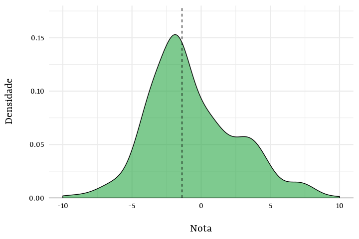
Os painéis abaixo exibem a distribuição dos scores – as métricas utilizadas para gerar as notas. De todos os tipos de scores, os de votações nominais são quase uniformemente distribuídos entre os deputados.
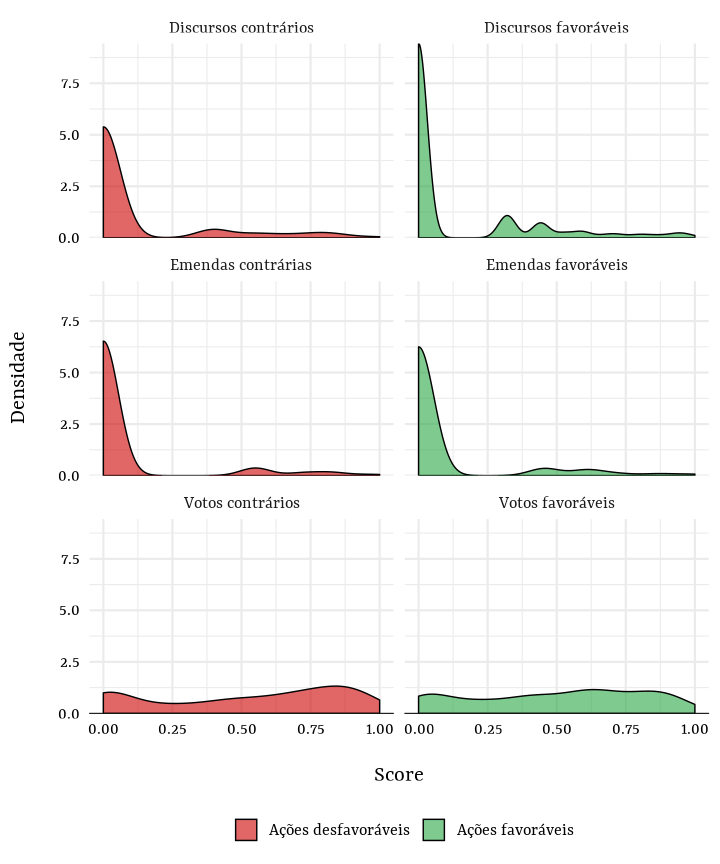
O gráfico a seguir reporta a distribuição das notas dos deputados agrupadas e ordenadas por partido. Disso, fica visível um padrão mais ou menos ideológico: direita e centro-direita aparecem com notas mais negativas, no geral. Outro ponto a ser observado é a variação dentro de alguns partidos. No PT, por exemplo, contam-se tanto deputados muito favoráveis quanto desfavoráveis ao tema.
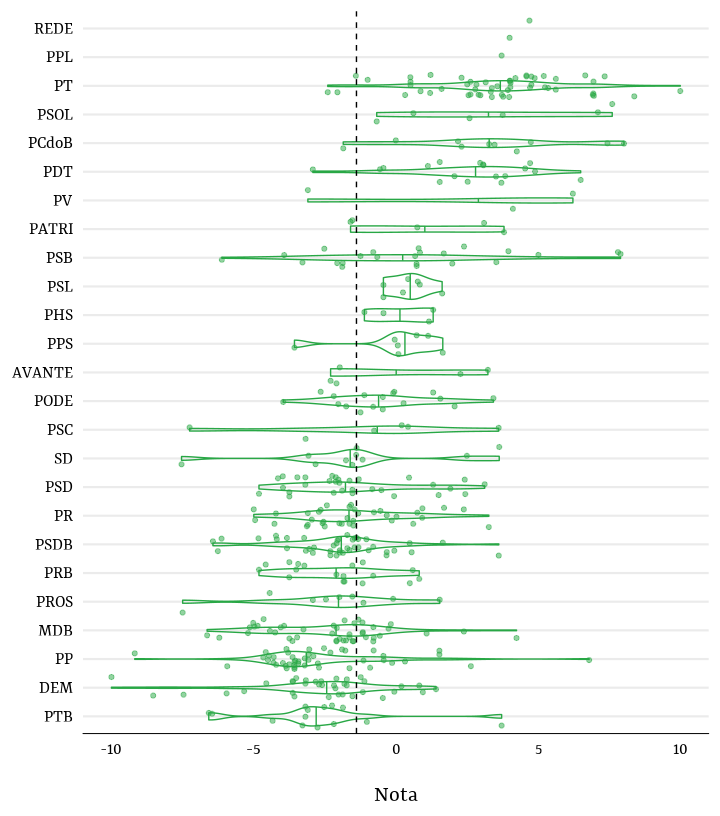
Por UF, a distribuição das notas deixa de ter padrão tão aparente. Como depreende-se do gráfico abaixo, há enorme dispersão dentro de cada unidade.
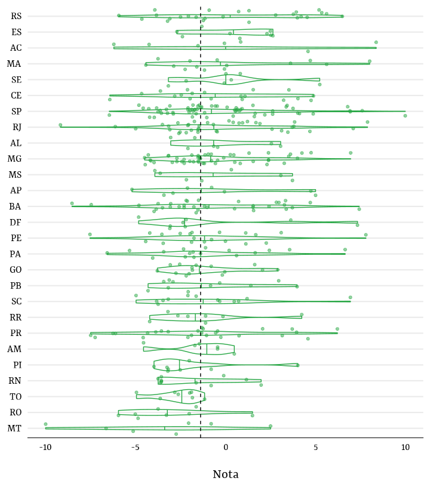
O sexo dos(as) deputados(as) não distingue suas notas no ranking. Há um pequeno número, entretanto, de mulheres com notas mais altas.
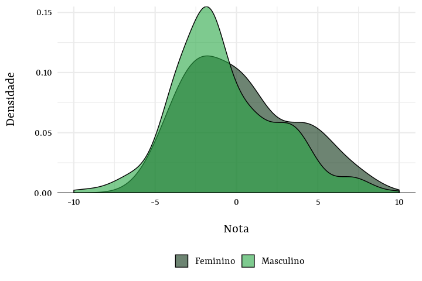
De forma similar, o grau de instrução reportado pelos(as) deputados(as) durante o registro de suas candidaturas junto ao TSE não têm relação aparente com a distribuição de suas notas no ranking.
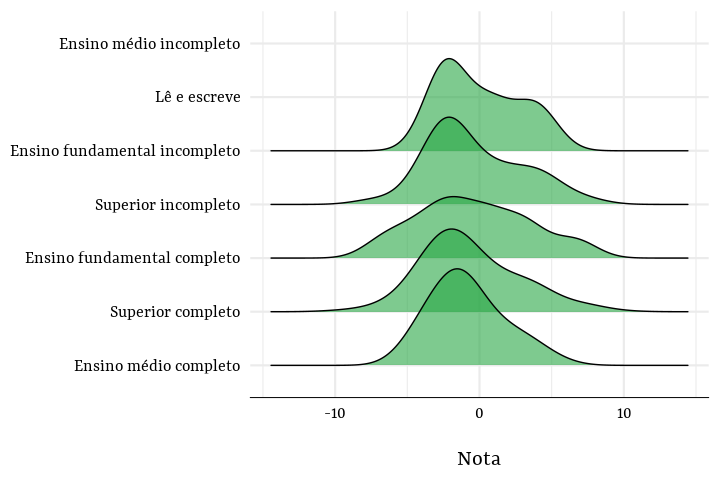
Quanto à cor da pele, deputados(as) autodeclarados(as) pretos(as) têm nota ligeiramente maiores que os(as) demais. Para a cor parda, a distribuição é bimodal, indicando a presença de dois grupos mais ou menos distantes na escala do ranking.
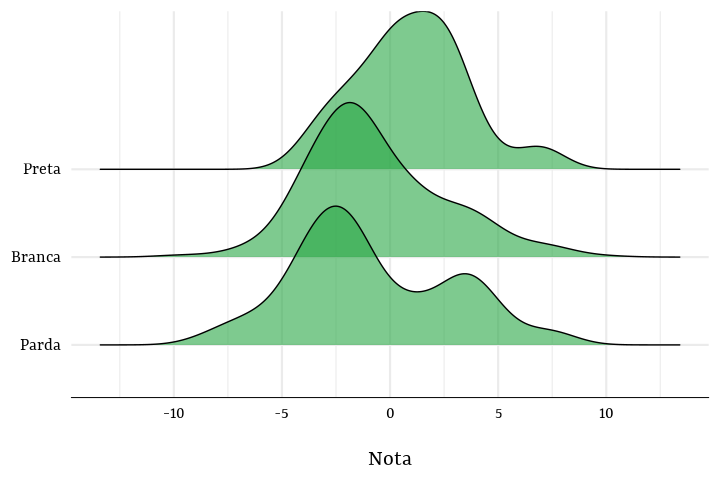
Parte da atuação parlamentar é mediada pelos partidos, algo que é especialmente saliente em votações nominais. Para remover o que é efeito dos partidos nas notas do ranking, no gráfico abaixo examinei os resíduos das notas regredidas na variável partidária. Com isso, é possível saber quais deputados(as) têm notas maiores ou menores do que é possível predizer com base em suas filiações – a comparação, em outras palavras, é feita sem levar controlando tudo aquilo determinado pelos partidos na variação do ranking.
Formalmente, seja \(i\) o indexador dos(as) deputados(as) e \(p\) o dos partidos, o modelo estimado por OLS estima o efeito predito do \(Partido^{j}\) sobre a \(Nota_{ij}\):
\[ Nota_{ij} = \beta Partido_{j} + \epsilon_{ij} \]
Cerca de 47.0% da variação na nota é predita pela filiação partidária e, mais importante, é possível inferir diferenças entre esses efeitos preditos, como mostra o gráfico abaixo (as linhas horizontais indicam os intervalos de confiança de 90% das estimativas).
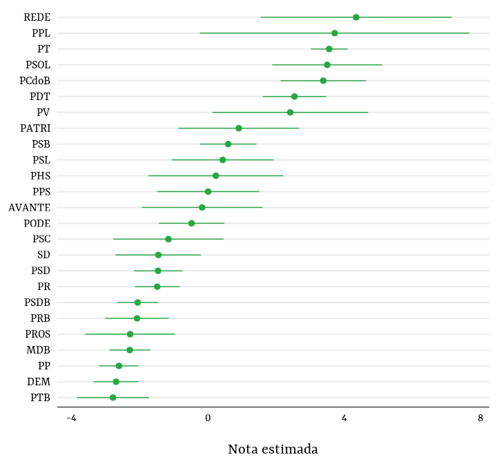
Tendo os valores preditos de \(\hat{Nota_{ij}}\), os resíduos partidários, \(\hat{Nota_{ij}} - Nota_{ij}\), podem ser usados para detectar quais parlamentares tiveram atuação mais positiva ou negativa do que seria de esperar dado a atuação de seus partidos. Uma lista com os 10 melhores segue abaixo:
| Rank* | Nome | Partido | UF |
|---|---|---|---|
| 1 | Arnaldo Faria De Sá | PP | SP |
| 2 | Alessandro Molon | PSB | RJ |
| 3 | Danilo Cabral | PSB | PE |
| 4 | Maria Helena | MDB | RR |
| 5 | Deley | PTB | RJ |
| 6 | Nilto Tatto | PT | SP |
| 7 | Waldir Maranhão | PSDB | MA |
| 8 | Evair Vieira De Melo | PP | ES |
| 9 | Augusto Carvalho | SD | DF |
| 10 | Leo De Brito | PT | AC |
Os 10 piores:
| Rank* | Nome | Partido | UF |
|---|---|---|---|
| 1 | Fabio Garcia | DEM | MT |
| 2 | Luciano Ducci | PSB | PR |
| 3 | Julio Lopes | PP | RJ |
| 4 | Takayama | PSC | PR |
| 5 | Augusto Coutinho | SD | PE |
| 6 | Helder Salomão | PT | ES |
| 7 | José Carlos Aleluia | DEM | BA |
| 8 | Luiz Sérgio | PT | RJ |
| 9 | Evandro Gussi | PV | SP |
| 10 | Roberto Góes | PDT | AP |
Abaixo, segue a distribuição espacial da soma dos votos percentuais dos(as) 100 deputados(as) com maior nota no ranking. Especificamente, cores mais claras no mapa indicam que, juntos, deputados(as) entre os 100 melhores obtiveram mais votos percentuais em dado município.
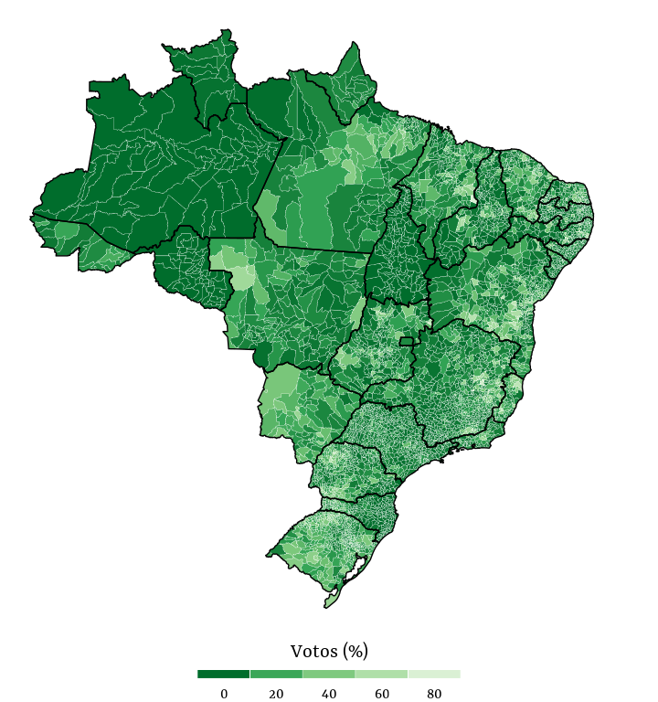
A seguir, o mapa da votação conjunta dos(as) 100 deputados(as) com pior nota no ranking.
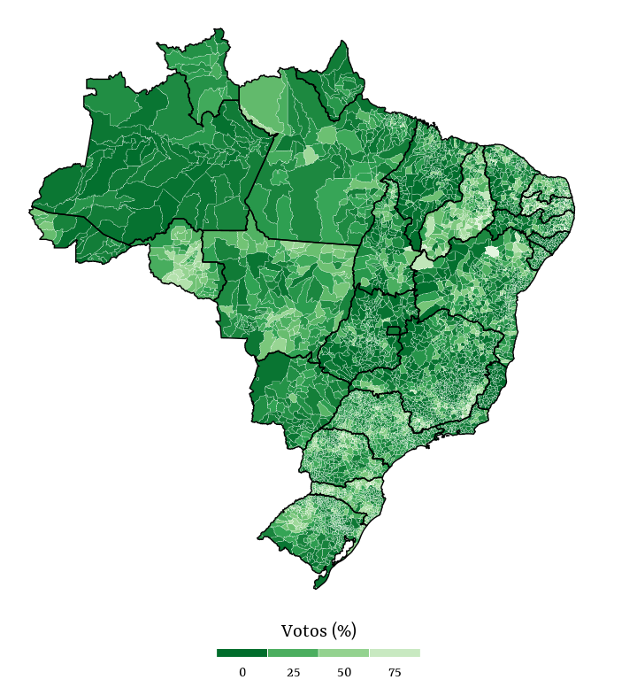
O gráfico abaixo mostra a distribuição das notas no ranking. Como é possível ver, a maioria dos deputados têm nota negativa. A nota média é de -1.64 e, a mediana da Câmara, é de -3.4 (indicada pela linha vertical tracejada no gráfico).
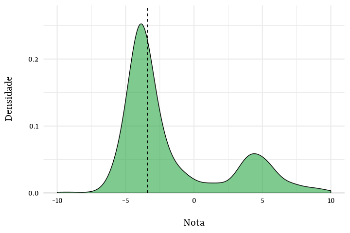
Os painéis abaixo exibem a distribuição dos scores – as métricas utilizadas para gerar as notas. De todos os tipos de scores, os de votações nominais são quase uniformemente distribuídos entre os deputados.
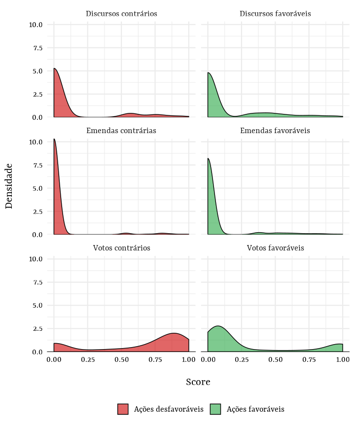
O gráfico a seguir reporta a distribuição das notas dos deputados agrupadas e ordenadas por partido. Disso, novamente fica visível um padrão mais ou menos ideológico, como no tema de Mudanças Climáticas: direita e centro-direita aparecem com notas mais negativas, no geral. Outro ponto a ser observado é a variação dentro de alguns partidos. Por fim, cabe notar que aparece um grupo de partidos de esquerda mais ou menos nítido, composto por PC do B, PSOL e PT.
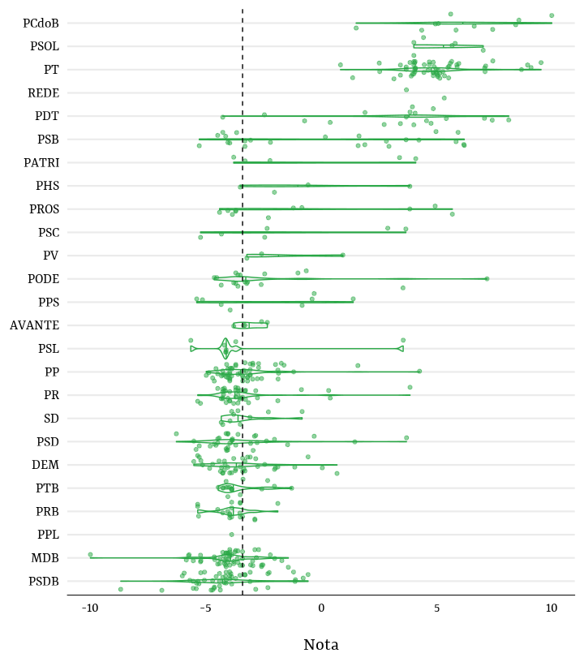
Por UF, a distribuição das notas deixa de ter padrão tão aparente. Como depreende-se do gráfico abaixo, há enorme dispersão dentro de cada unidade.
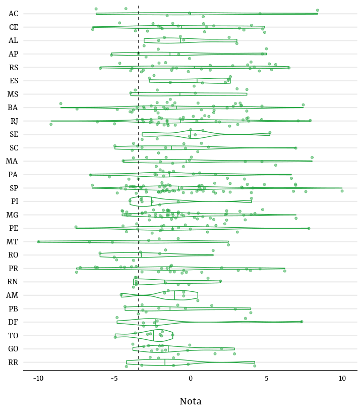
O sexo dos(as) deputados(as) não distingue suas notas no ranking. Há um pequeno número, entretanto, de mulheres com notas mais altas.
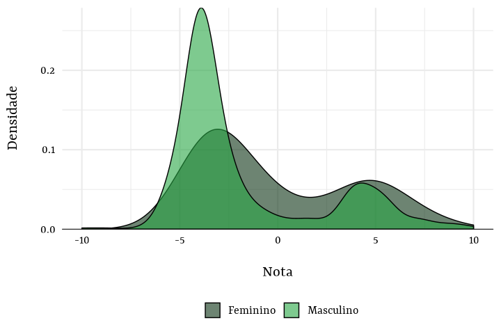
De forma similar, o grau de instrução reportado pelos(as) deputados(as) durante o registro de suas candidaturas junto ao TSE não têm relação aparente com a distribuição de suas notas no ranking.
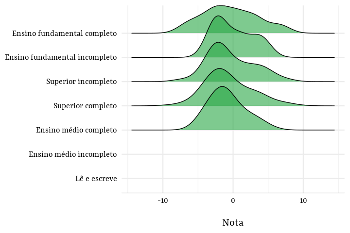
Quanto à cor da pele, deputados(as) autodeclarados(as) pretos(as) têm nota ligeiramente maiores que os(as) demais. Para a cor parda, a distribuição é bimodal, indicando a presença de dois grupos mais ou menos distantes na escala do ranking.
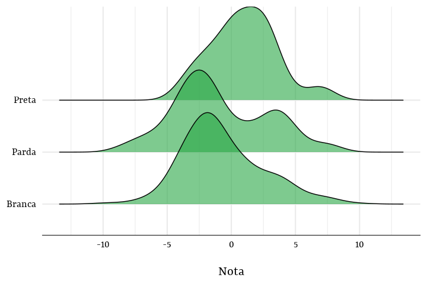
Utilizando a metodologia já empregada anteriormente, nesta parte são analisados os resíduos partidários das notas no tema. Cerca de 75.5% da variação na nota é predita pela filiação partidária e, mais importante, é possível inferir diferenças entre esses efeitos preditos, como mostra o gráfico abaixo (as linhas horizontais indicam os intervalos de confiança de 90% das estimativas).
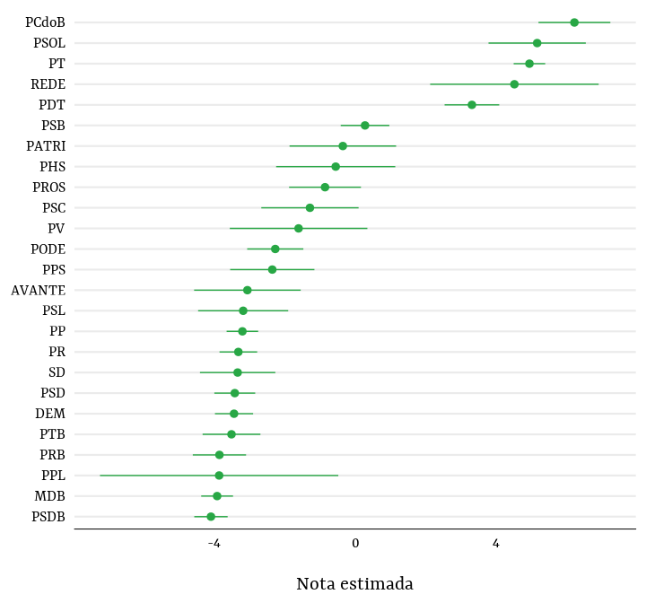
Abaixo, segue a distribuição espacial da soma dos votos percentuais dos(as) 100 deputados(as) com maior nota no ranking.
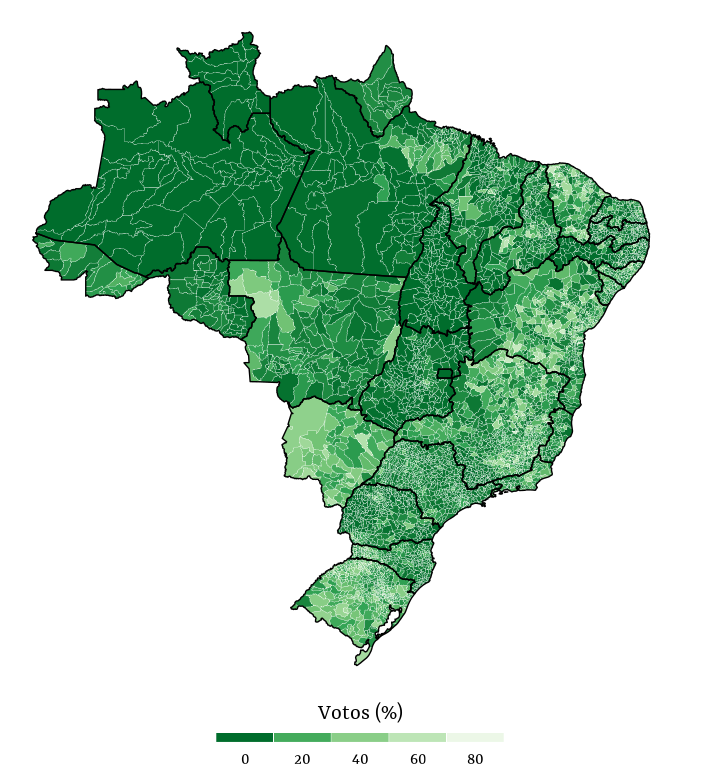
A seguir, o mapa da votação conjunta dos(as) 100 deputados(as) com pior nota no ranking.
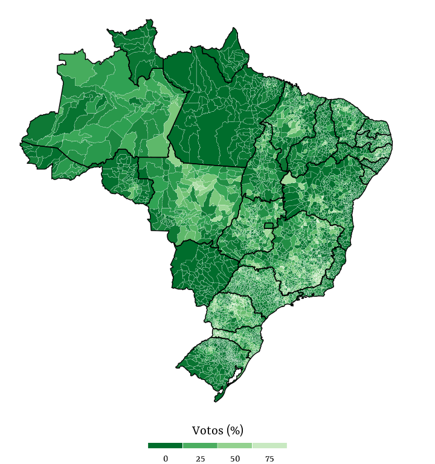